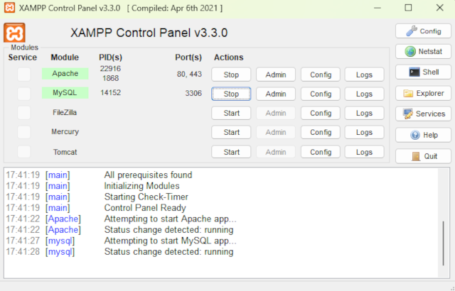
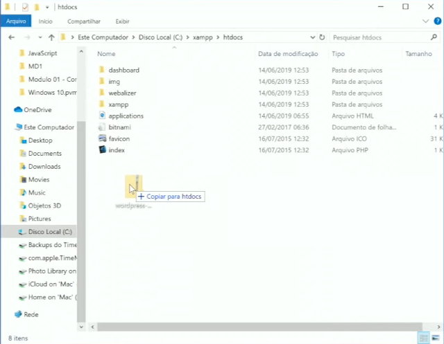
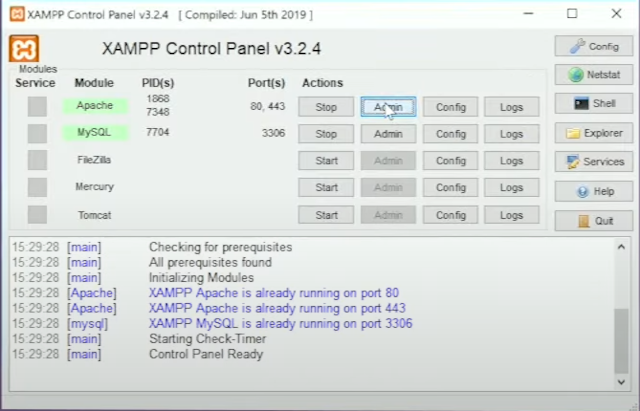
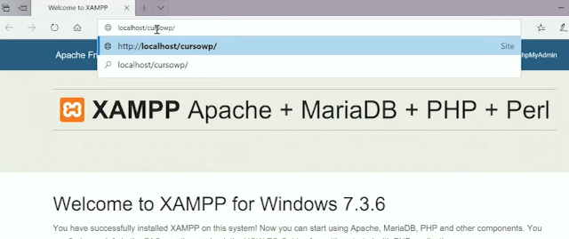
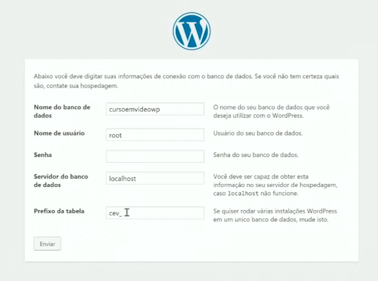
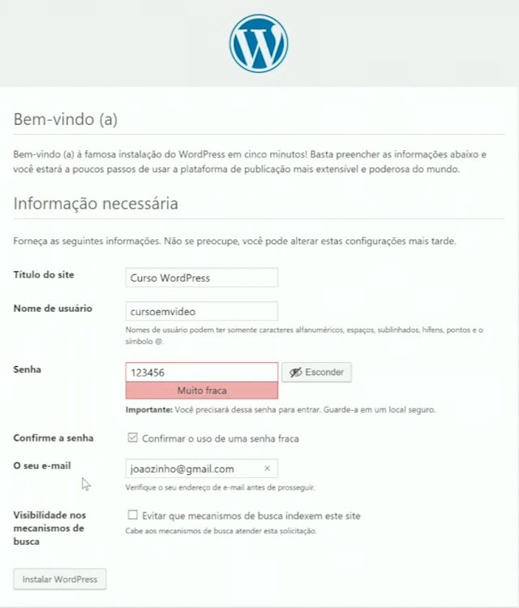
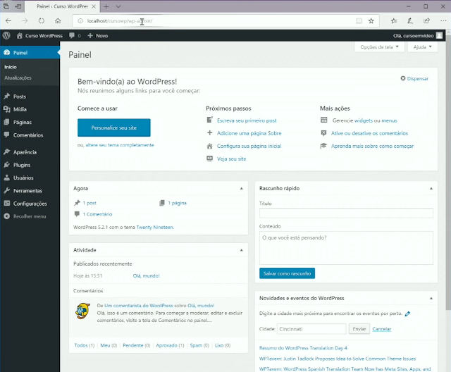

Instalando WordPress - Local
1º Abra o XAMPP (servidor local). Caso Apache ou MySQL não abram. Recomenda-se que você feche o software que provavelmente esteja usando a porta de entrada.

2º Baixe o WordPress pelo Link de Download - WordPress.
3º Instale a Aplicação

4º Cole o zip dentro da pasta C:\xampp\htdocs
5º Estraia e Renomeie a pasta extraida, e em seguida dê o Nome do Site.
Exemplo: cursowp.
6º Click em Admin

7º http://localhost/dashboard/ por http://localhost/cursowp/

8º Configure o Idioma: português (Brasil)
Atualize sempre seu software WordPress e todos os Plugins
Há um plugin pago que atualiza tudo Automaticamente.

9º Configure o informaões necessárias
Não marque a opção Visibilidade nos mecanismos de busca
10º Click em Instalar

11º acesse o Painel de Cotrole do WP
Lembre-se: este é um servidor local, para treino do uso e o desenvolvimento do site
através do WordPress
